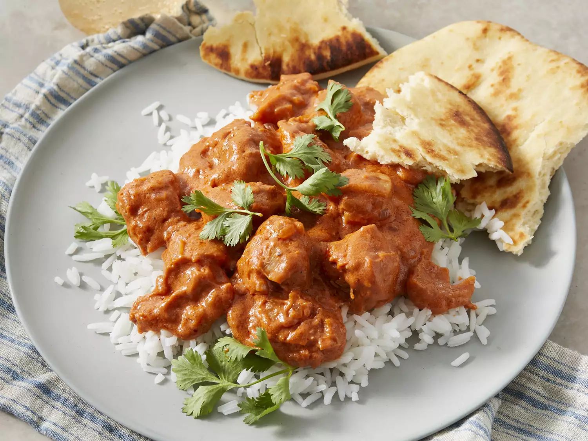

Butter Chicken

Description
Butter Chicken also known as Chicken Makhani is a classic
Indian dish that's made by simmering marinated & grilled chicken
(Tandoori chicken) in a spicy, aromatic, buttery and creamy tomato
gravy. This lip-smacking and delicious dish is hugely popular among
the Indian food lovers across the world.
Ingredients
- 2 tablespoons peanut oil, divided
- 1 shallot, finely chopped
- ¼ white onion, chopped
- 2 tablespoons butter
- 1 tablespoon ginger garlic paste
- 2 teaspoons lemon juice
- 2 teaspoons garam masala, divided
- 1 teaspoon chili powder
- 1 teaspoon ground cumin
- 1 bay leaf
- 1 cup tomato puree
- 1 cup half-and-half
- ¼ cup plain yogurt
- 1 pinch salt and ground black pepper to taste
- 1 pound boneless, skinless chicken thighs, cut into bite-size pieces
- ¼ teaspoon cayenne pepper, or to taste
- 1 tablespoon cornstarch
- ¼ cup water